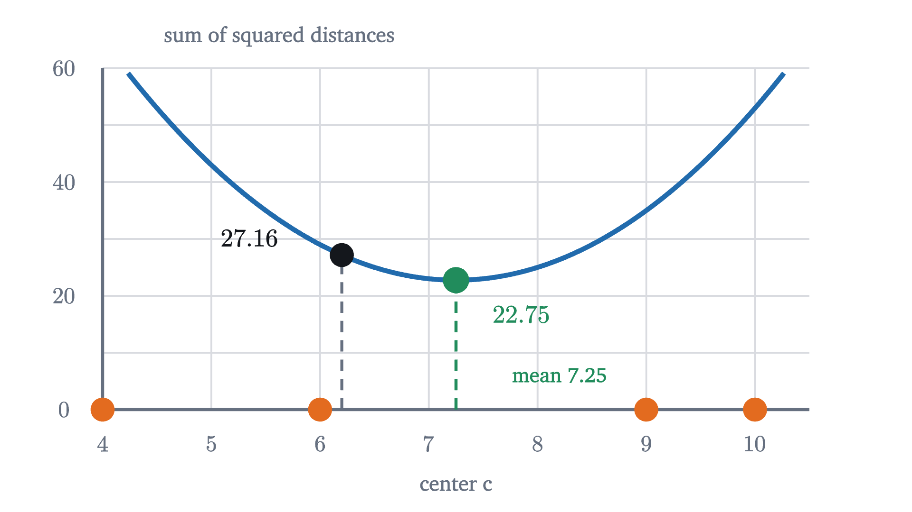
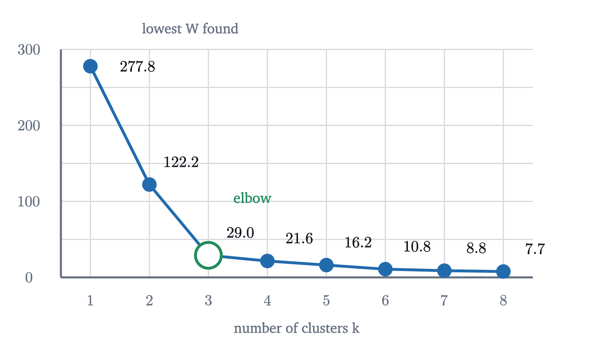
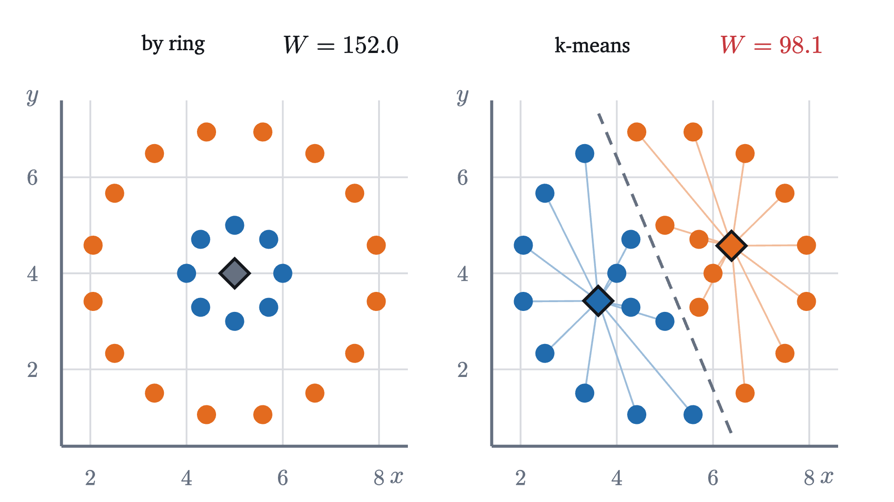

k-means: finding groups nobody labeled
Score a grouping by its sum of squared distances, lower it with Lloyd's two alternating steps, prove the algorithm must stop, and see where it goes wrong.
AssumesMean, median and standard deviation: what each one saysThe Pythagorean theorem: a proof you can see
Look at the thirty gray points at the start of the animation. You see three groups at once and could circle them with a pencil. Nobody told you that there are three, or which point belongs where. Now hand the same data to a program, as a list of sixty numbers, and ask it for the groups.
The earlier lessons of this series are no help. Each of them had a right answer attached to every example, a price or a label, and a loss that measured how far the model’s answers were from the right ones. Here there are no right answers to miss. Finding structure in data without labels is called unsupervised learning, and grouping is its most basic task. Before we can ask a program to find good groups, we have to say what makes a grouping good.
A score for a grouping
Start with the smallest interesting case: six numbers on a line,
to be split into two groups. The split $\{1, 2, 4\}$, $\{6, 9, 10\}$ looks reasonable, and so does $\{1, 2\}$, $\{4, 6, 9, 10\}$. To choose we need a number. A good group is tight: its members are close to one another, or, what is easier to compute, close to a single central point. Take the mean of each group as its center and add up the squared distances from each number to the center of its group, as the variance does for one group.
For the first split the means are $\frac73 \approx 2.33$ and $\frac{25}{3} \approx 8.33$, and the sum is
For the second the means are $1.5$ and $7.25$, and the sum is $0.5 + 22.75 = 23.25$. The first split is tighter.
In the plane, $|x - \mu|^2$ is the sum of the squared differences of the two coordinates, by the Pythagorean theorem. Squaring means a point far from its center costs much more than a near one.
Pause and try
Compute $W$ for the split $\{1, 2, 4, 6\}$, $\{9, 10\}$. Is it better than $13.33$?
Show answerHide answer
The means are $3.25$ and $9.5$. The first cluster contributes $2.25^2 + 1.25^2 + 0.75^2 + 2.75^2 = 5.0625 + 1.5625 + 0.5625 + 7.5625 = 14.75$ and the second $0.25 + 0.25 = 0.5$, so $W = 15.25$. It is worse.
Why not try every grouping
We now have a precise problem, and for six numbers a way to solve it: compute $W$ for every split and keep the best. Each number goes to one of two clusters, so there are $2^6 = 64$ ways to label them. For the thirty points of the figure and three clusters there are $3^{30}$, which is about $2 \times 10^{14}$, and for a thousand points the count has 478 digits. Trying everything is out.
Look again at the definition of $J$. It has two kinds of unknowns, the clusters and the centers, and each kind is easy to choose once the other is known. If someone hands us the centers, the best clusters are immediate: every point should go to its nearest center, since that makes its own term as small as possible. If someone hands us the clusters, each center should go wherever it makes its cluster’s sum smallest. We have been using the mean, and that needs to be justified.
The identity says more than “the mean is best”: it prices every other choice. Putting the center of $n$ points at distance $d$ from their mean costs exactly $nd^2$ extra.

Lloyd’s algorithm
Neither half of the problem is hard, and each needs the answer to the other. So guess one, solve for the other, and go back and forth.
Run it on the six numbers with $k = 2$, starting the centers at the first two numbers, $\mu_1 = 1$ and $\mu_2 = 2$.
Assignment. The number 1 is nearest to $\mu_1$. Every other number is nearer to $\mu_2 = 2$. The clusters are $\{1\}$ and $\{2, 4, 6, 9, 10\}$, and $J = 0 + (0 + 4 + 16 + 49 + 64) = 133$.
Update. The means are $\mu_1 = 1$ and $\mu_2 = 31/5 = 6.2$. Now $J = 17.64 + 4.84 + 0.04 + 7.84 + 14.44 = 44.8$.
Pause and try
Carry out the next assignment step and update step from $\mu_1 = 1$, $\mu_2 = 6.2$. Give the clusters, the new centers, and $J$ after each step.
Show answerHide answer
Assignment: the number 2 is at distance 1 from $\mu_1$ and $4.2$ from $\mu_2$, so it switches. The number 4 is at distance 3 from $\mu_1$ and $2.2$ from $\mu_2$, so it stays. The clusters are $\{1, 2\}$ and $\{4, 6, 9, 10\}$, and $J = (0 + 1) + (4.84 + 0.04 + 7.84 + 14.44) = 28.16$. Update: $\mu_1 = 1.5$ and $\mu_2 = 29/4 = 7.25$, and $J = 0.5 + 22.75 = 23.25$.
The figure continues to the end.
The run ends at the clusters $\{1, 2, 4\}$ and $\{6, 9, 10\}$ with $W = 13.33$, the tighter of the two splits we scored at the beginning. Checking all 64 labelings confirms that no split of these six numbers does better.
In the plane nothing changes except the distance formula. The thirty points of the opening figure are listed at the end of this section. Take $k = 3$ and start the centers on the first three points of the list, $(6, 4.9)$, $(4.9, 6.3)$ and $(1.1, 1.6)$.

After three rounds the centers sit at $(6.96, 2.43)$, $(5.01, 6.28)$ and $(1.89, 1.79)$, each cluster has ten points, and $W = 29.05$. The objective went $100.6,\ 42.9,\ 35.8,\ 32.2,\ 30.0,\ 29.0$.
Why it must stop
In both runs the objective fell at every step, and the algorithm stopped after a few rounds. Neither was luck.
The bound $k^n$ is the same astronomical number as before, and it is only a guarantee. In practice a few dozen rounds are typical.
It stops, but not always at the best grouping
The theorem says the algorithm stops. It does not say where. Run it on the same thirty points again, with one change: start the centers on the second, third and fourth points of the list instead of the first three.
The second run stops after three rounds at $W = 116.8$, four times the $29.05$ of the first. Two of its centers started in the lower-left group and split it between them. The third was left to cover both other groups, and no single step can repair that: every point is already assigned to its nearest center, and every center is already at the mean of its points.
A clustering at which Lloyd’s algorithm stops is a local optimum: neither step can improve it. The clustering with the smallest possible $W$ is the global optimum. The algorithm finds a local optimum, and which one depends on the start, as with gradient descent on a surface with several dips. The standard defense is to run it from many different starts and keep the result with the lowest $W$. Among all starts on three distinct points of our list, 88% reach $29.05$ and the rest stop at $116.8$ or worse.
Choosing k
So far $k$ was given. When it is not, the natural idea is to let the objective choose: compute the best $W$ found for each $k$ and compare.
Pause and try
What is the smallest possible $W$ when $k = n$, one cluster per point? What does that say about choosing $k$ by minimizing $W$?
Show answerHide answer
With every point its own cluster, each center sits on its point and $W = 0$. No smaller value is possible, so minimizing $W$ over $k$ always answers $k = n$, which describes nothing. More clusters always fit the points more closely, just as a polynomial of higher degree always fits its training points more closely. Low $W$ alone cannot be the criterion.

Going from one cluster to two lowers $W$ by $156$, and from two to three by $93$. After that each extra cluster buys less than $8$. Up to $k = 3$ a new center captures a real group; beyond it, new centers only cut existing groups into pieces. Choosing the $k$ at the bend is the elbow method. It is a rule of thumb with no theorem behind it, and many data sets show no clear bend.
Where k-means fails
The assignment step has a geometric consequence that limits what k-means can find. Take two centers, $\mu_1 = (a_1, b_1)$ and $\mu_2 = (a_2, b_2)$. A point $(x, y)$ is nearer to $\mu_1$ when $(x - a_1)^2 + (y - b_1)^2 < (x - a_2)^2 + (y - b_2)^2$. Expand both sides. The terms $x^2 + y^2$ cancel, and what is left is
a linear inequality. So the boundary between two k-means clusters is always a straight line, the perpendicular bisector of the segment joining their centers, and with $k = 2$ the clusters are the two sides of a line.
Groups that no line separates are therefore out of reach. Take 8 points on a circle of radius 1 and 16 points on a circle of radius 3 around the same middle point: two rings, obvious to the eye.

Lloyd’s algorithm cuts the picture in half and reports $W = 98.1$. Notice that this is lower than the $152$ of the grouping by ring. Even a perfect minimizer of $W$ would refuse the rings, so no better start could help: the objective itself prefers the wrong answer. k-means looks for compact blobs, because that is what a small sum of squared distances to a center describes.
Two more limits follow from the same formula. Distances add the coordinates as they are, so the result depends on the units: measuring one coordinate in centimeters instead of meters multiplies its differences by 100 and lets it dominate. Coordinates are usually rescaled to comparable spreads first. And because the cost is squared, one point very far from the rest can drag a center toward itself.
Worked examples
Stepping back
The obstacle was a search over an astronomically large set of groupings. What got us past it was noticing that the objective has two blocks of unknowns and is easy in each block separately, then alternating between the two. That idea, improving one block while holding the other fixed, comes with a guarantee and a price that we saw in full: the objective can only go down, so the process stops, and where it stops depends on where it began.
The objective also deserves the blame or credit for what is found. k-means returns compact, roughly round groups because the sum of squared distances to a center rewards exactly those.
Check yourself
A run of Lloyd’s algorithm has just finished an update step with $J = 40$. In the next assignment step, three points change cluster. Which statement must be true?
Problems
The first three are computations, the next two combine ideas, and the last two extend the lesson.
Problem 1
Run Lloyd’s algorithm on the numbers $1, 3, 4, 8, 10$ with $k = 2$, starting from centers $1$ and $3$. Give the clusters and centers after each round and the final $W$.
Show solutionHide solution
Round 1. Assignment: $1$ goes to the first center; $3, 4, 8, 10$ are nearer to $3$. Update: centers $1$ and $\frac{25}{4} = 6.25$. Round 2. Assignment: $3$ is at distance 2 from the first center and $3.25$ from the second, so it switches; $4$ is at $3$ and $2.25$, so it stays. Clusters $\{1, 3\}$, $\{4, 8, 10\}$. Update: centers $2$ and $\frac{22}{3} \approx 7.33$. Round 3. Assignment: $4$ is at distance 2 from the first center and $3.33$ from the second, so it switches. Clusters $\{1, 3, 4\}$, $\{8, 10\}$. Update: centers $\frac83 \approx 2.67$ and $9$. Round 4. $4$ is at $1.33$ and $5$; $8$ is at $5.33$ and $1$. Nothing changes, so the algorithm stops. $W = \frac{25 + 1 + 16}{9} + (1 + 1) = \frac{42}{9} + 2 \approx 6.67$.
Problem 2
The clusters $\{(1, 1), (3, 1)\}$ and $\{(6, 5), (6, 7), (9, 6)\}$ are given. Find their means and $W$.
Show solutionHide solution
The means are $(2, 1)$ and $(7, 6)$. In the first cluster each point is at squared distance $1$, contributing $2$. In the second the squared distances are $1 + 1 = 2$, $1 + 1 = 2$ and $4 + 0 = 4$, contributing $8$. So $W = 10$.
Problem 3
Verify the identity $\sum (x_i - c)^2 = \sum (x_i - \bar x)^2 + n(\bar x - c)^2$ for the numbers $1, 2, 6$ and $c = 5$. Then use it to say how much the sum of squared distances of a cluster of 20 points rises if its center is placed $0.5$ away from the mean.
Show solutionHide solution
The mean is $3$. Left side: $16 + 9 + 1 = 26$. Right side: $(4 + 1 + 9) + 3 \times (3 - 5)^2 = 14 + 12 = 26$. For 20 points and a center at distance $0.5$ from the mean, the extra cost is $n d^2 = 20 \times 0.25 = 5$, whatever the arrangement of the points.
Problem 4
Two centers are at $\mu_1 = (1, 2)$ and $\mu_2 = (5, 4)$. (a) Find the equation of the line that separates the points nearer to $\mu_1$ from those nearer to $\mu_2$. (b) To which center is $(3, 3.5)$ assigned? Check with distances.
Show solutionHide solution
(a) By the inequality of the lesson, a point is nearer to $\mu_1$ when $2(5 - 1)x + 2(4 - 2)y < 25 + 16 - 1 - 4$, that is $8x + 4y < 36$, or $2x + y < 9$. The boundary is the line $2x + y = 9$. It passes through the midpoint $(3, 3)$ of the two centers, and its slope $-2$ is perpendicular to the slope $\frac12$ of the segment joining them. (b) At $(3, 3.5)$, $2x + y = 9.5 > 9$, so the point is nearer to $\mu_2$. Check: the squared distances are $4 + 2.25 = 6.25$ to $\mu_1$ and $4 + 0.25 = 4.25$ to $\mu_2$.
Problem 5
The four points $(0, 0)$, $(a, 0)$, $(0, b)$, $(a, b)$ are the corners of a rectangle with $a, b > 0$. Consider the clustering $V$ into left and right edges and the clustering $H$ into bottom and top edges. (a) Compute $W$ for each. (b) Show that both are local optima of Lloyd’s algorithm. (c) With $a = 4$ and $b = 1$, which is better? What happens if the first coordinate is then measured in a unit ten times larger, so that $a = 0.4$?
Show solutionHide solution
(a) In $V$ the centers are $(0, b/2)$ and $(a, b/2)$ and every point is at distance $b/2$ from its center, so $W_V = 4 \cdot b^2/4 = b^2$. In $H$ the centers are $(a/2, 0)$ and $(a/2, b)$, and $W_H = a^2$. (b) In $V$, a point’s squared distance to its own center is $b^2/4$ and to the other center $a^2 + b^2/4$, which is larger, so the assignment step changes nothing; the centers are already the means. The same argument with $a$ and $b$ exchanged covers $H$. (c) With $a = 4$, $b = 1$: $W_V = 1$ and $W_H = 16$, so $V$ is better. With $a = 0.4$: $W_V = 1$ still, and $W_H = 0.16$, so $H$ is better. The points have not changed, only the unit of one coordinate, and the preferred clustering flipped. This is why coordinates are rescaled before clustering.
Problem 6
(More clusters, lower $W$.) Suppose a clustering into $k < n$ clusters has $W > 0$. Show that there is a clustering into $k + 1$ clusters with strictly smaller $W$. Conclude that the smallest possible $W$ strictly decreases as $k$ increases, until it reaches 0.
Show solutionHide solution
Since $W > 0$, some cluster $C$ contains a point $p$ that is not at the mean $m$ of $C$. Remove $p$ from $C$ and make it a cluster by itself. Its own contribution drops from $|p - m|^2 > 0$ to 0. The remaining points of $C$ contributed $\sum |x_i - m|^2$ before, and afterwards they contribute the sum of squared distances to their new mean, which by the theorem on the mean is no larger than their sum of squared distances to any other point, in particular to $m$. So the total strictly decreases. Applying this to the best clustering with $k$ clusters shows that the best with $k + 1$ is strictly better whenever the former has $W > 0$. Hence the minimum of $W$ falls strictly with $k$ until it is 0, and $W$ alone cannot choose $k$.
Problem 7
(Within plus between.) Let $\bar x$ be the mean of all $n$ points, and let cluster $C_j$ have $n_j$ points and mean $\mu_j$. (a) Show that the total sum of squares $T = \sum_i |x_i - \bar x|^2$ satisfies $T = W + B$, where $B = \sum_j n_j\,|\mu_j - \bar x|^2$. (b) Check it on the rectangle with $a = 4$, $b = 1$ and the clustering into left and right edges. (c) Why does this show that minimizing $W$ is the same as pushing the cluster centers far apart?
Show solutionHide solution
(a) Apply the identity of the theorem on the mean to each cluster separately, with $c = \bar x$: $\sum_{x_i \in C_j} |x_i - \bar x|^2 = \sum_{x_i \in C_j} |x_i - \mu_j|^2 + n_j|\mu_j - \bar x|^2$. Adding over the clusters, the left sides add up to $T$, the first terms on the right to $W$ and the second to $B$. (b) The overall mean is $(2, 0.5)$, and each corner is at squared distance $4 + 0.25$ from it, so $T = 17$. We found $W = 1$. The centers $(0, 0.5)$ and $(4, 0.5)$ are each at squared distance 4 from $(2, 0.5)$ and each cluster has 2 points, so $B = 2 \cdot 4 + 2 \cdot 4 = 16$, and $1 + 16 = 17$. (c) $T$ depends only on the data and not on the clustering. So a clustering has the smallest $W$ exactly when it has the largest $B$, and $B$ measures how far the cluster means are spread from the overall mean, weighted by cluster size.